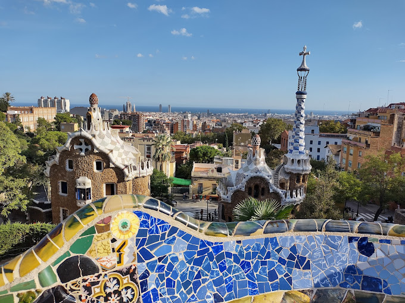

Parc Guell
Park Güell is a privatized park system composed of gardens and architectural elements located on Carmel Hill, in Barcelona, Catalonia, Spain. Carmel Hill belongs to the mountain range of Collserola – the Parc del Carmel is located on the northern face.
